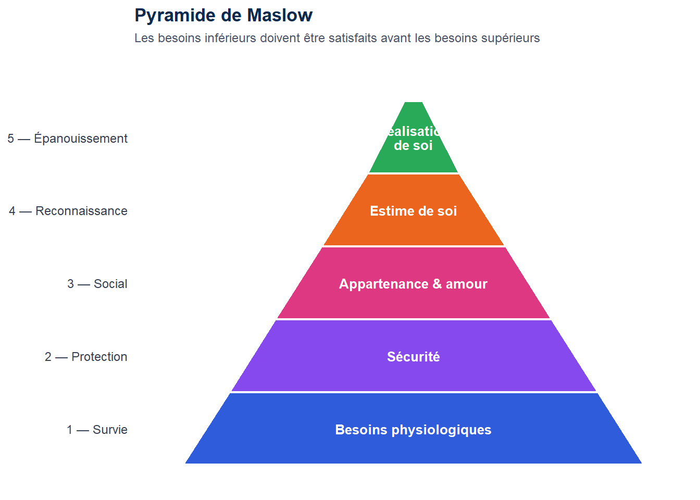

Voir le code R
library(ggplot2)
# Chaque étage est un trapèze : plus on monte, plus la base est étroite
# niveau 1 (bas) = Physiologiques, niveau 5 (sommet) = Réalisation
etages <- data.frame(
niveau = 1:5,
label = c("Besoins physiologiques", "Sécurité", "Appartenance & amour",
"Estime de soi", "Réalisation\nde soi"),
couleur = c("#1d4ed8", "#7c3aed", "#db2777", "#ea580c", "#16a34a"),
# demi-largeur de la base et du sommet de chaque trapèze
x_base = c(5.0, 4.0, 3.0, 2.0, 1.0),
x_top = c(4.0, 3.0, 2.0, 1.0, 0.2),
y_bottom = c(0, 1, 2, 3, 4),
y_top = c(1, 2, 3, 4, 5)
)
# Construire les polygones (trapèzes)
poly_list <- lapply(seq_len(nrow(etages)), function(i) {
e <- etages[i, ]
data.frame(
x = c(-e$x_base, e$x_base, e$x_top, -e$x_top),
y = c(e$y_bottom, e$y_bottom, e$y_top, e$y_top),
niveau = e$niveau,
label = e$label,
couleur = e$couleur
)
})
poly_df <- do.call(rbind, poly_list)
# Centres pour les labels
centres <- data.frame(
x = 0,
y = etages$y_bottom + 0.5,
label = etages$label,
couleur = etages$couleur
)
ggplot() +
geom_polygon(
data = poly_df,
aes(x = x, y = y, group = niveau, fill = couleur),
colour = "white", linewidth = 0.8, alpha = 0.92
) +
geom_text(
data = centres,
aes(x = x, y = y, label = label),
color = "white", fontface = "bold", size = 3.4,
lineheight = 0.9
) +
scale_fill_identity() +
scale_y_continuous(
breaks = 0.5:4.5,
labels = c("1 — Survie", "2 — Protection",
"3 — Social", "4 — Reconnaissance", "5 — Épanouissement")
) +
coord_cartesian(xlim = c(-5.5, 5.5), ylim = c(-0.1, 5.4)) +
theme_minimal(base_size = 11) +
theme(
axis.text.x = element_blank(),
axis.ticks.x = element_blank(),
axis.text.y = element_text(color = "#374151", size = 9),
panel.grid = element_blank(),
plot.title = element_text(face = "bold", color = "#0d2b4e", size = 13),
plot.subtitle = element_text(color = "#4a5568", size = 9)
) +
labs(
x = NULL, y = NULL,
title = "Pyramide de Maslow",
subtitle = "Les besoins inférieurs doivent être satisfaits avant les besoins supérieurs"
)